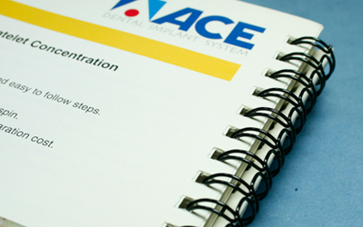
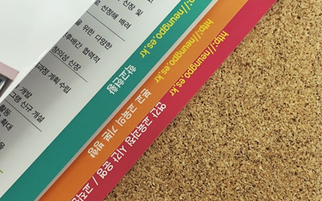

제본 작업가이드
- 후공정할 크기와 재질에 따라 퀄리티 차이가 날 수 있습니다. 담당자와 상담 후 진행해주세요.
중철제본
가장 많이 사용하는 제본방법으로 페이지물 중앙에 스테플러로 찝어 묶는 방법입니다.

무선제본
제본된 부분에 접착제로 가공하여 고정하는 방식으로 페이지 양이 많거나 고급스러운 인쇄물에 사용 됩니다.

양장제본
주로 두껍고 단단한 표지와 내지를 제본하는 방식으로 실로 묶어 단단히 고정이 되며 최고급 제본방식입니다.

스프링제본
인쇄물을 재단한 후 타공후 스프링으로 제본하는 방식으로 낱장씩 페이지 추가가 가능하며 손쉽게 넘길 수 있는 부분이 장점입니다.
-

-
계단제본
종이와 종이를 조금씩 밀어서 제본하는 방식으로 페이지 제목을 손쉽게 알 수 있습니다.
-

-
톰슨제본
원하는 내용과 모양으로 제작하는 방식으로 중요한 부분을 부각시키며 페이지의 구성내용을 한 눈에 볼 수 있도록 하는 방식입니다.